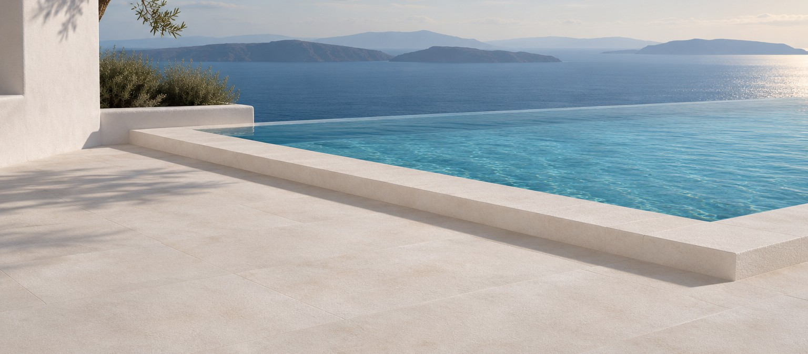
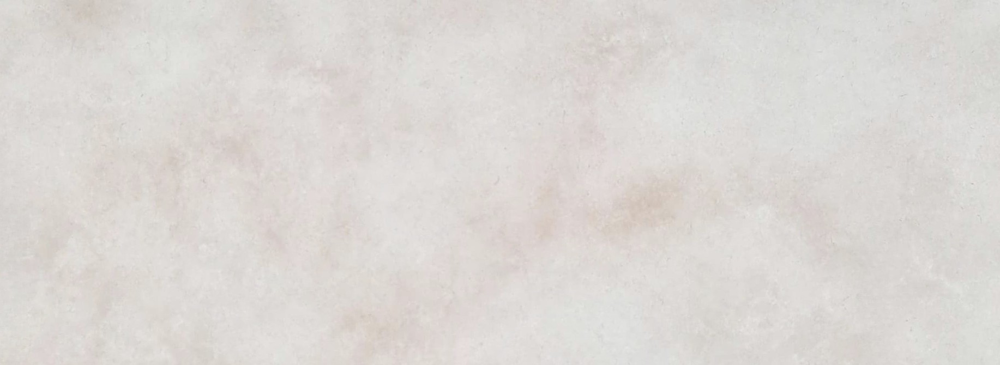

Visualisation · plage de piscine bouchardée
Marbre · Suez, Égypte
Galala
Nommé d'après le mont Galala, dans la région de Suez : une pierre crème à blanc cassé, d'aspect calme et régulier, et l'une des pierres les plus exportées d'Égypte. Géologiquement un calcaire.
Fourniture
Finitions
Poli, adouci, brossé, sablé, bouchardé, vieilli
Applications
Sols intérieurs et extérieurs, plages de piscine, escaliers, murs, façades, plans de travail
Blocs
Oui
Tranches
Jusqu'à 300 × 195 cm
Carreaux
Coupe sur mesure
Épaisseur
1 – 20 cm
Sélections
Light · Classic · Cream · Crema
Bon à savoir
L'un des rares calcaires égyptiens à tenir un vrai poli. Les finitions bouchardée et sablée servent aux dallages et marches extérieurs ; le Galala poli se prescrit en intérieur uniquement. Les sélections varient selon la carrière.
Données techniques
Compression
176 MPa
Traction
12.5 MPa
Abrasion
31.6 Ha
Densité
2 675 kg/m³
Absorption
0.17 %
Valeurs d'essai de l'Egyptian Export Council. La pierre naturelle varie d'un bloc à l'autre ; venez voir la pierre au parc avant de commander.

Surface réelle
Marbre & Calcaire